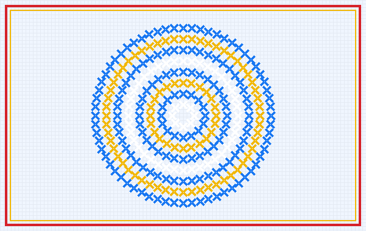

Історія та регіональні особливості
Витоки
Від скіфських часів до сьогодення
Археологічні знахідки на Черкащині (Мартинівський скарб VI ст.) підтверджують, що давні слов'яни прикрашали одяг орнаментами, схожими на сучасні українські вишиванки.
Геродот у своїх працях згадував, що скіфи оздоблювали свій одяг багатою вишивкою. У XIX столітті Іван Франко започаткував нову моду, поєднавши вишиту сорочку з європейським піджаком.

Кольори та візерунки регіонів України
| Регіон | Провідні кольори | Характерні мотиви та техніки |
|---|---|---|
| Полтавщина | Білий, пастельно-сірий, світло-блакитний | Знаменита техніка «білим по білому», мережки, ніжні рослинні та геометричні узори. |
| Поділля | Чорний, червоний, жовтий, синій | Щільні геометричні орнаменти, техніка «низинка», багатство барв на рукавах. |
| Гуцульщина | Помаранчевий, жовтий, червоний, зелений | Яскраві ромби, зірки, «кучері», густе зашивання полотна вовняними нитками. |
| Полісся | Червоний та білий | Стримані, архаїчні геометричні фігури — ромби, лінії, розетки, ткані узори. |
| Київщина | Червоний та чорний | Пишні рослинно-геометричні композиції з гронами винограду, калиною та хмелем. |